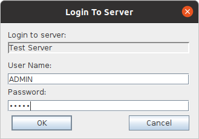
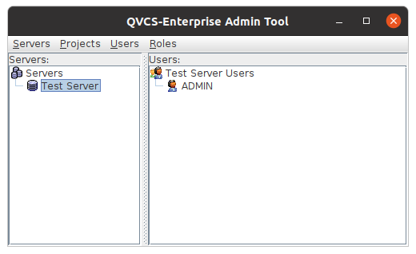

|
QVCS Enterprise -- Installation and Getting Started...Step 5: Login to the server:Clicking on the server that you defined in step 4 should bring up a Login to Server dialog. You need to enter the administrator user name and password. When a server is first created the administrator user ADMIN (all caps) is created with a default password of ADMIN (all caps).  Enter ADMIN (all caps) for the username and ADMIN (all caps) for the password, and click OK. You will now be logged in to the server. The server pane will show just the one server you have defined, and the Users pane will show the name of the server with the ADMIN user shown as the only user known for the selected server.  Step 6: Change the administrator password:This step is optional, but we strongly recommend that you change the administrator password in order to secure your system. Select the ADMIN user node on the right side of the screen. Right click, and select the Change password menu item. On the resulting Change User Password dialog, enter a new password. The OK button will only let you proceed if both the "New Password" and the "Confirm New Password" values are the same. Make sure to remember this new password. If you lose it, it will be very tedious to re-build the authentication store and re-add all the other users. |
| For the source code, see https://github.com/jimv39/qvcsos |